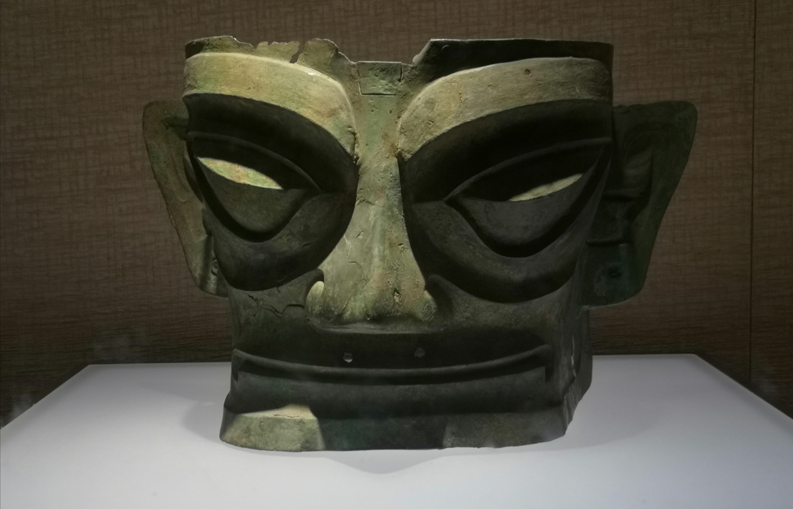
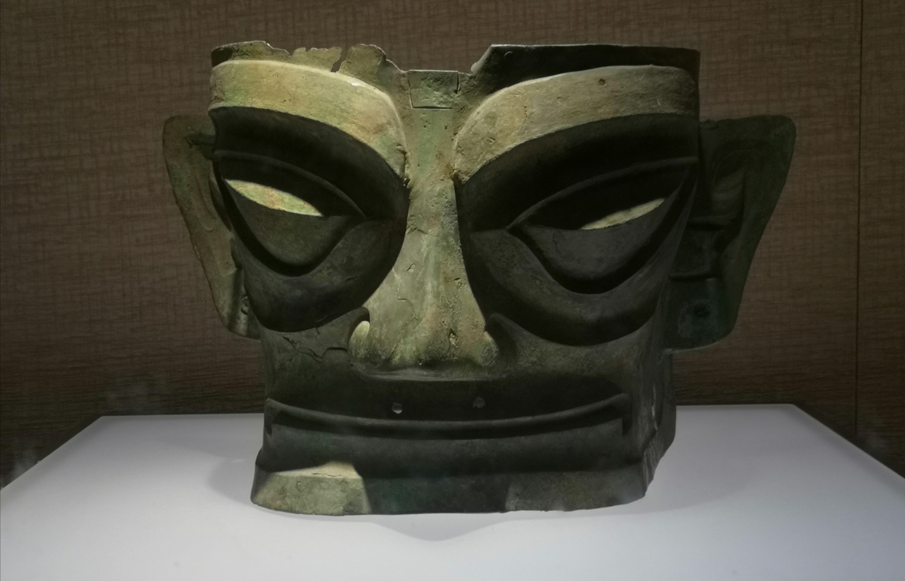

随记
首先就去了最繁荣的太古里街道打卡熊猫建筑，其实到那后很一般，但是确实很繁华，吃的玩的也很多，还有很多帅哥美女。 但是经费不足就不要踏进去了，唉。
心心念念的三星堆博物馆人特别多，距离市中心也很远，里面的青铜器让我大开眼界，跟着解说能了解很多历史故事， 但是解说周围人太多，还是自己看比较自由，我觉得去增强一下我的历史底蕴是很重要的。
择一城终老，携一人白首。
首先就去了最繁荣的太古里街道打卡熊猫建筑，其实到那后很一般，但是确实很繁华，吃的玩的也很多，还有很多帅哥美女。 但是经费不足就不要踏进去了，唉。
心心念念的三星堆博物馆人特别多，距离市中心也很远，里面的青铜器让我大开眼界，跟着解说能了解很多历史故事， 但是解说周围人太多，还是自己看比较自由，我觉得去增强一下我的历史底蕴是很重要的。
成都，简称“蓉”，别称蓉城、锦城，四川省辖地级市，是四川省省会、副省级市、特大城市、 成渝地区双城经济圈核心城市，国务院批复确定的中国西部地区重要的中心城市，国家重要的高新技术产业基地、商贸物流中心和综合交通枢纽。

四川大学正门的建筑都采用的仿古式建筑，还有池塘，配上凉亭，有一种穿越回几十年前一样。 四川大学校园也很大，可惜疫情原因没能进去。